大数据 010flume常用架构
一、常用架构
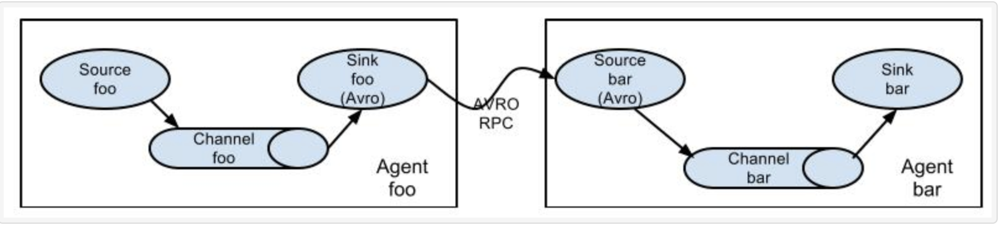
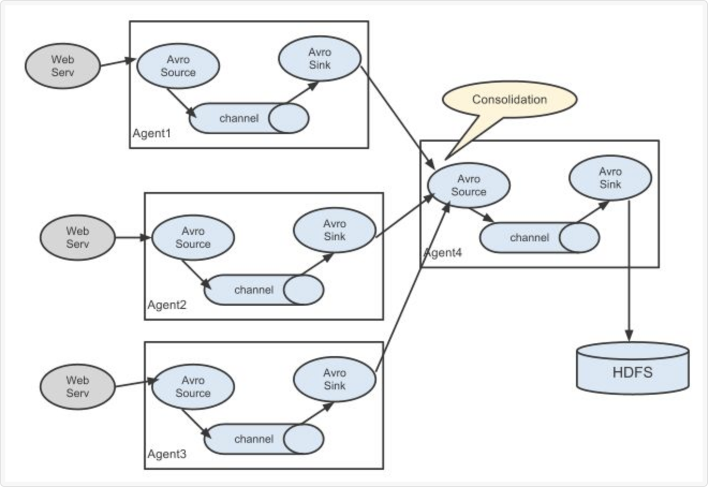
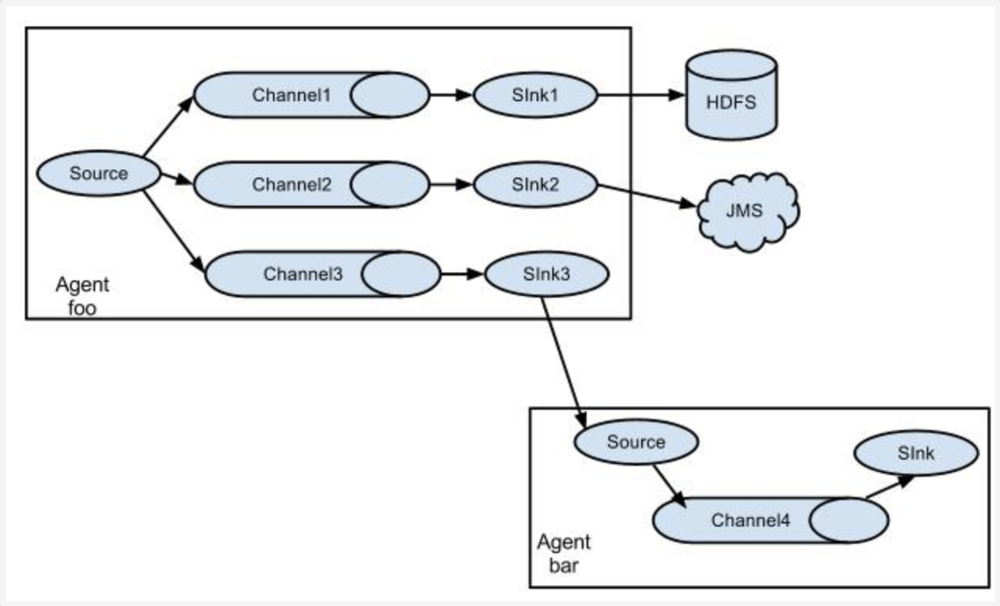
二、组件结构
Flume是一个分布式、高可靠、高可用的日志收集系统。能够有效的收集、聚合、移动大量的日志。
把各种类型的数据源采集汇总到各种类型的目的地,flume有一个口号：“我们不生产数据，我们是数据的搬运工。”
那我们怎么去搬运数据呢？
让我们想想，那就需要一个入口（采集数据），和一个出口(推送数据)，中间再加上一些队列(暂存数据，让数据流动起来)，
这样一来我们就可以去搬运数据了，自己也可以去实现一个简单的搬运数据的。当然我们已经不需要了，
因为大牛已经帮我们实现了就是flume,能采集各种数据(各种source),推动到各种目的地（sink）。
下面我们来看看flume的组件结构：
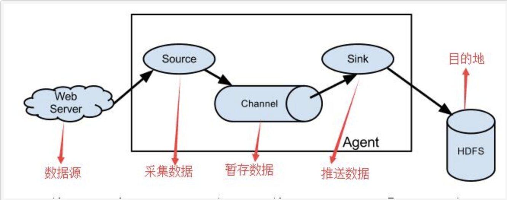
三、Flume 理解
Flume 的核心（agent）就是把数据从数据源收集过来，再送到目的地。
为了保证高可靠输送一定成功，在送到目的地之前，会先缓存数据，待数据真正到达目的地后，删除自己缓存的数据。
- Flume : 传输的数据的基本单位是 Event，如果是文本文件，通常是一行记录，这也是事务的基本单位。
- Event : （包含：headers:{} 、body） 从 Source，流向 Channel，再到 Sink，本身为一个 byte 数组。
- Source : 对数据进行收集，分成transtion 和 event 打入到channel之中。
- Channel : 就像一个管道(队列)，接收 Source 的输出，再推送给 Sink 消费。
数据直到进入到下一个Channel中或者进入终端才会被删除。
即:中转Event临时存储，在 sources 和 sinks之间起一个连接作用 。 - Sink : 取出 Channel 中的数据，然后送给外部源（HDFS、HBase）或者其他 Source。
Flume处理流程总结：
Flume由事件(Event)贯穿了整个数据流动。事件是Flume的基本数据单位，它携带日志数据(字节数组形式)和头信息，这些Event由Agent外部的Source生成，当Source捕获事件后会进行特定的格式化，然后Source会把事件推入(单个或多个)Channel中（缓冲区），它将保存事件直到Sink处理完该事件。Sink负责持久化日志或者把事件推向另一个Source。
Flume 组件
Flume提供了大量内置的Source、Channel和Sink。不同类型的Source,Channel和Sink可以自由组合。
比如：source 来源可以是日志文件，Avro和Thrift端口Kafka等， Channel可以把事件暂存在内存里，也可以持久化到本地硬盘上。Sink可以把日志写入HDFS、Hive、HBase，甚至是另外一个Source等。
四、Source
常见采集的数据类型：
Exec Source、Avro Source、NetCat Source、Spooling Directory Source、Kafka Source等。
详细查看：http://flume.apache.org/FlumeUserGuide.html#flume-sources
Source应用：
- Avro Source：监听一个 avro 服务端口，采集Avro数据序列化后的数据；
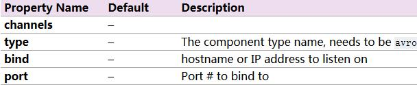
- type：avrosource的类型，必须是avro。
- bind：要监听的(本机的)主机名或者ip。此监听不是过滤发送方。一台电脑不是说只有一个IP。有多网卡的电脑，对应多个IP。
- port：绑定的本地的端口。
- Exec Source：基于Unix的command在标准输出上采集数据（tail -F）；
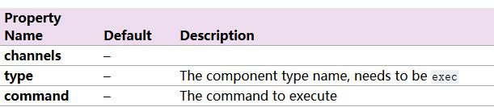
- type:source的类型：必须是exec。
- command：要执行命令。
- NetCat Source： 绑定的端口（tcp、udp），将流经端口的每一个文本行数据作为Event输入；
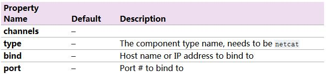
- type：source的类型，必须是netcat。
- bind：要监听的(本机的)主机名或者ip。此监听不是过滤发送方。一台电脑不是说只有一个IP。有多网卡的电脑，对应多个IP。
- port：绑定的本地的端口。
-
Kafka Source：从 kafka 服务中采集数据； 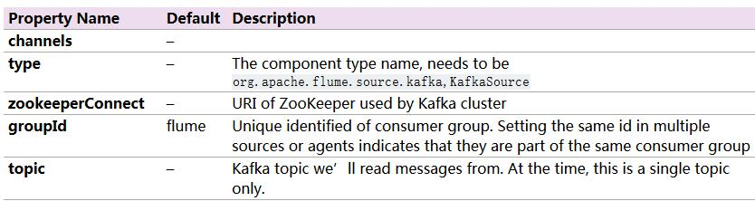
-
Thrift Source：监听一个 Thrift 服务端口，采集Thrift数据序列化后的数据； 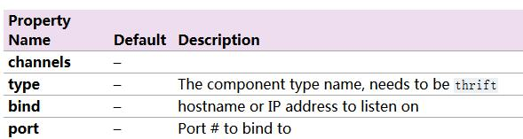
-
JMS Source： Java 消息服务数据源，Java消息服务是一个与具体平台无关的API，这是支持jms规范的数据源采集；
-
Spooling Directory Source：通过文件夹里的新增的文件作为数据源的采集；
-
HTTP Source：监听 HTTP POST和 GET 产生的数据的采集；
五、Channel
常见采集的数据类型：
Memory Channel、File Channel、JDBC Channel、Kafka Channel等。
详细查看：http://flume.apache.org/FlumeUserGuide.html#flume-channels
Channel应用
- Memory Channel：使用 内存 作为数据的存储(详情大家可以去官网，或者阅读下载下来的doc文档)。
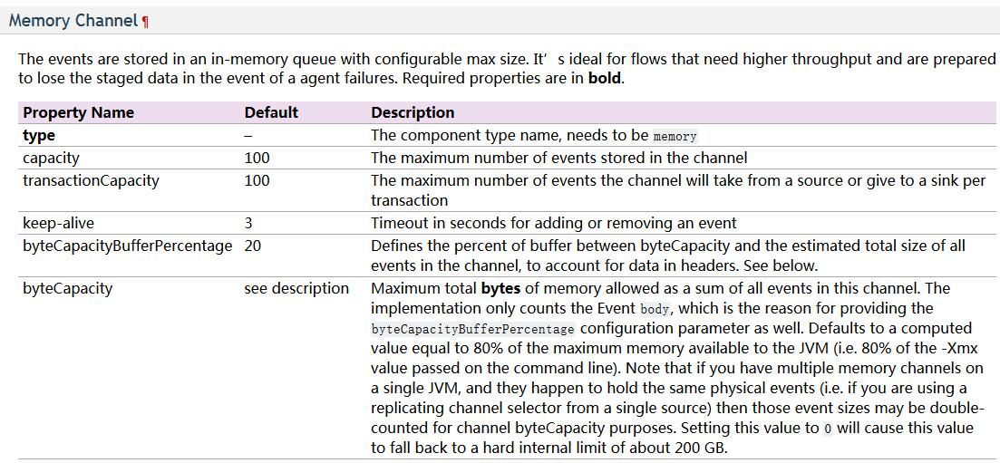
- channel的类型 ： 必须为memory
- capacity ： channel中的最大event数目
- transactionCapacity ： channel中允许事务的最大event数目
- JDBC Channel：使用 jdbc 数据源来作为数据的存储。
- Kafka Channel：使用 kafka服务 来作为数据的存储。
- File Channel：使用 文件 来作为数据的存储。
- Spillable Memory Channel：使用内存和文件作为数据的存储，即：先存在内存中，如果内存中数据达到阀值则flush到文件中。
六、Sink
常见采集的数据类型：
HDFS Sink、Hive Sink、Logger Sink、Avro Sink、Thrift Sink、File Roll Sink、HBaseSink、Kafka Sink等。
详细查看：http://flume.apache.org/FlumeUserGuide.html#flume-sinks
Sink应用：
-
HDFS Sink：将数据传输到 hdfs 集群中。 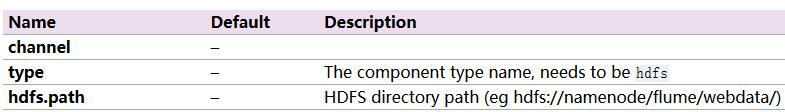
- type ： sink的类型 必须是hdfs。
- hdfs.path ： hdfs的上传路径。
- hdfs.filePrefix ： hdfs文件的前缀。默认是:FlumeData
- hdfs.rollInterval : 间隔多久产生新文件，默认是:30（秒） 0表示不以时间间隔为准。
- hdfs.rollSize ： 文件到达多大再产生一个新文件，默认是:1024（bytes）0表示不以文件大小为准。
- hdfs.rollCount ： event达到多大再产生一个新文件，默认是:10（个）0表示不以event数目为准。
- hdfs.batchSize ： 每次往hdfs里提交多少个event，默认为100
- hdfs.fileType ： hdfs文件的格式
- hdfs.codeC ： 压缩方式：gzip, bzip2, lzo, lzop, snappy
-
Hive Sink：将数据传输到 hive 的表中。
-
Logger Sink：将数据作为 日志 处理（根据flume中的设置的日志的级别显示）。
要在控制台显示在运行agent的时候加入：-Dflume.root.logger=INFO,console 。- type ： sink的类型：必须是 logger。
- maxBytesToLog ： 打印body的最长的字节数 默认为16
-
Avro Sink：数据被转换成 Avro Event ，然后发送到指定的服务端口上。
-
Thrift Sink：数据被转换成 Thrift Event ，然后发送到指定的的服务端口上。
-
Kafka Sink：将数据发送到 kafka服务 中。（注意依赖类库）
-
IRC Sink：数据向指定的 IRC服务 和端口中发送。
-
File Roll Sink：数据传输到 本地文件 中。
-
Null Sink：取消数据的传输，即不发送到任何目的地。
-
HBaseSink：将数据发往 hbase 数据库中。
-
MorphlineSolrSink：数据发送到 Solr搜索服务器 （集群）。
-
ElasticSearchSink：数据发送到 Elastic Search 搜索服务器（集群）。
七、Interceptor
-
Timestamp Interceptor : 时间戳拦截器 在header里加入key为timestamp，value为当前时间。
- type ： 拦截器的类型，必须为timestamp
- preserveExisting ： 如果此拦截器增加的key已经存在，如果这个值设置为true则保持原来的值，否则覆盖原来的值。默认为false
-
Host Interceptor : 主机名或者ip拦截器，在header里加入ip或者主机名
- type ： 拦截器的类型，必须为host
- preserveExisting ： 如果此拦截器增加的key已经存在，如果这个值设置为true则保持原来的值，否则覆盖原来的值。默认为false
- useIP ： 如果设置为true则使用ip地址，否则使用主机名，默认为true
- hostHeader ： 使用的header的key名字，默认为host
-
Static Interceptor ： 静态拦截器，是在header里加入固定的key和value。
- type ： avrosource的类型，必须是static。
- preserveExisting : 如果此拦截器增加的key已经存在，如果这个值设置为true则保持原来的值，否则覆盖原来的值。默认为false
- key : 静态拦截器添加的key的名字
- value : 静态拦截器添加的key对应的value值
八、Channel Selector
- Multiplexing Channel Selector 根据header的key的值分配channel
- selector.type 默认为replicating
- selector.header：选择作为判断的key
- selector.default：默认的channel配置
- selector.mapping.*：匹配到的channel的配置
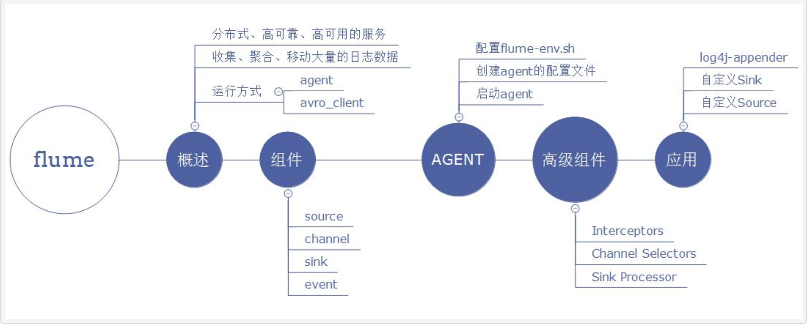